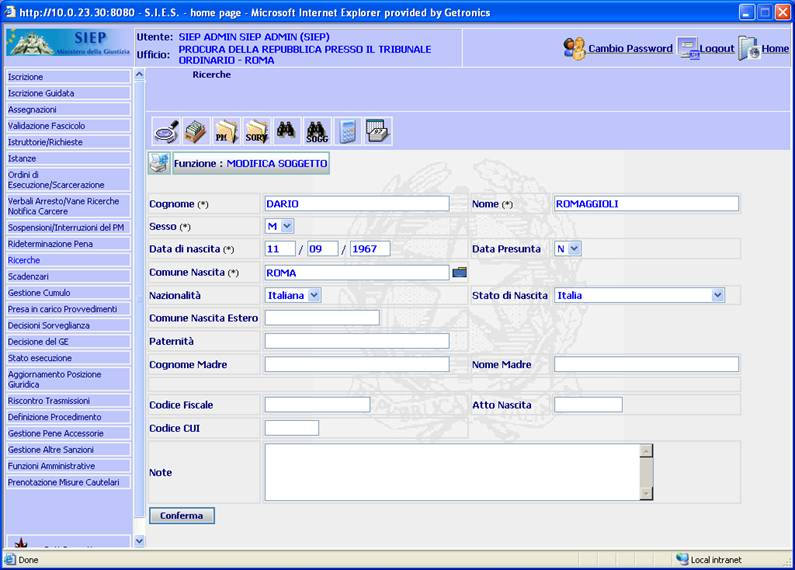

GENERALITA'
MODIFICA SOGGETTO: La
funzione, consente
di modificare dati anagrafici del condannato.
LE MASCHERE VIDEO
La funzione in
esame viene realizzata attraverso l'utilizzo della seguente maschera
che
riporta gli elementi
descrittivi e operativi dei dati anagrafici
del condannato.

Ci sono due tipologie
di campi: obbligatori e opzionali; i campi
obbligatori
sono contrassegnati con un asterisco.
COME FARE PER ...
Per modificare un
soggetto l'utente deve:
-
Posizionarsi sulla
scheda di modifica.
-
Introdurre i dati
obbligatori ed eventualmente i dati opzionali.
-
Confermare i dati
inseriti nella maschera agendo sul bottone
 . A
fronte di questa operazione il
soggetto viene inserito nel sistema
e viene visualizzata la scheda
del
Dettaglio soggetto.
. A
fronte di questa operazione il
soggetto viene inserito nel sistema
e viene visualizzata la scheda
del
Dettaglio soggetto.
CAMPI
I dati che
consentono di definire
un nuovo soggetto sono i seguenti:
| NOME |
DESCRIZIONE |
| Cognome * |
Compilare il campo con testo libero |
| Nome * |
Compilare il campo con testo libero |
| Comune di Nascita
* |
Selezionare tramite la cartella blu o inserire
manualmente il testo all’interno del campo. N.B.
se il comune
risulta inesistente verrà visualizzato un messaggio di errore |
| Data di Nascita
* |
Compilare il campo data
nel formato gg/mm/aaaa. |
| Sesso
* |
Selezionare
tramite il menù a tendina una delle seguenti voci:
M/F |
| Data
presunta |
Specificare se la data indicata è presunta o meno; S -
indica la data presunta, N -
indica la data certa.
N.B.
nel caso in cui si seleziona “S” è ammesso l’inserimento di una data parziale in
cui sarà obbligatorio inserire almeno il presunto anno di nascita. |
|
Nazionalità |
Selezionare tramite il menù a tendina una delle voci: ESTERA
/
ITALIANA.
N.B.
la nazionalità è indipendente dallo Stato di nascita |
| Stato
di nascita |
Selezionare tramite il menù a tendina la voce desiderata. |
|
Comune Nascita
Estero |
Compilare
il campo con testo libero.
N.B.
l’esistenza del comune non è accertata |
|
Paternità |
Compilare il campo con testo libero. |
|
Cognome Madre |
Compilare
il campo con testo libero. |
|
Nome Madre |
Compilare il campo con testo libero. |
|
Codice Fiscale |
Compilare il campo con testo libero. |
|
Atto Nascita |
Compilare il campo con testo libero. |
| Codice
CUI |
Compilare il campo con testo libero. |
| Note |
Compilare
con testo libero se si intende aggiungere informazioni supplementari. |